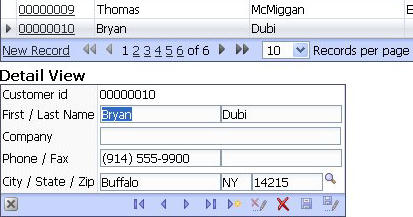
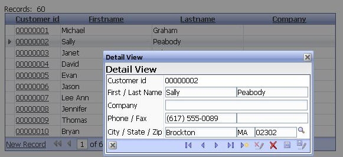
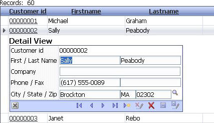
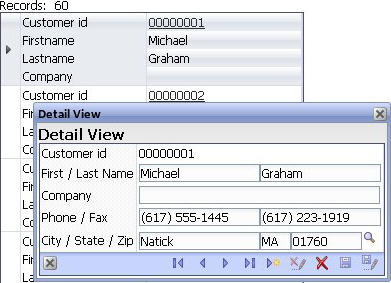

Detail View
Property name: 'Detail View window position' ('Detail View-> Properties' pane)
There are new options for where the Detail View is shown. It can be shown in page (the same as previously), in the grid, in a popup modal window, or in a popup modeless window. The modal popup window will gray out the underlying grid and nothing on the grid can be selected. The modeless popup allows selecting records on the grid with the popup open. The popup windows have a 'drag' capability to allow them to be moved around on the page.
The Detail View includes a toolbar that allows you to navigate from record to record. When in enter mode, has a 'Save and Enter' button (Ctrl-F9)
Detail views can now be defined for 'Form' and 'Stacked' layouts. (Previously Detail View was only available for 'Grid' layout)
|  |
|
Detail view on page |
|  |
|
Detail View in modal popup window |
|  |
|
Detail View in grid |
|  |
|
Detail View on columnar grid with modeless popup window |